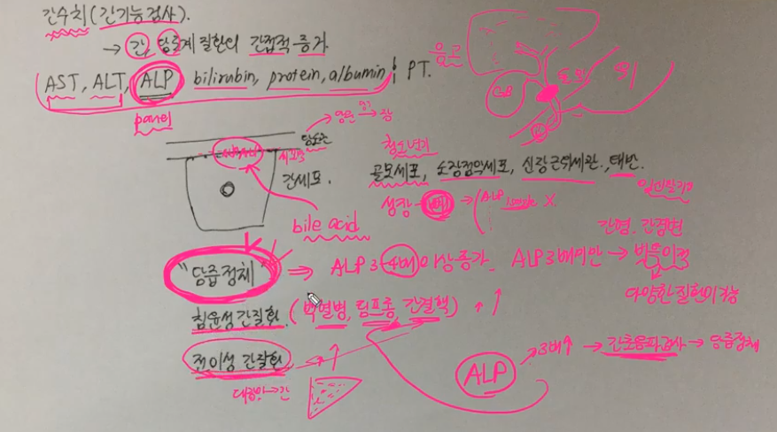
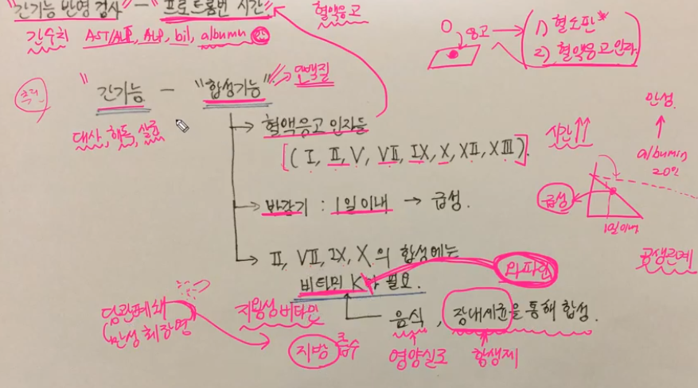
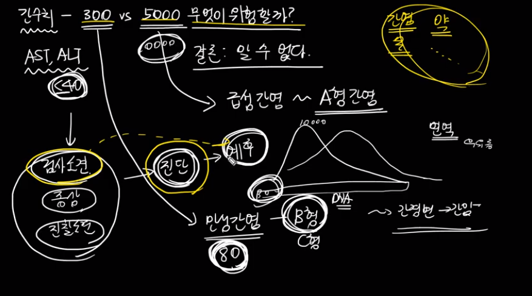
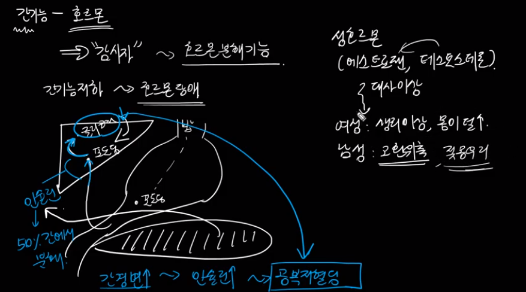
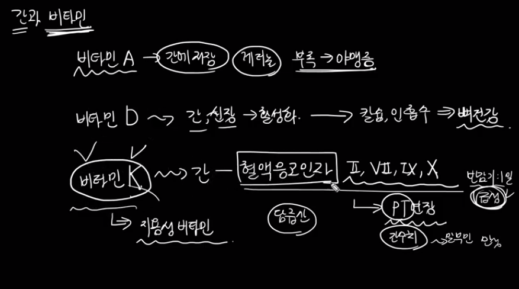

기역과 함께하는 깊이있는 의학공부
간수치 (간기능검사) - AST, ALT란 무엇인가? youtube

간수치(간기능검사) - ALP란 무엇인가? youtube

간수치(간기능검사) - 빌리루빈(bilirubin)이란 무엇인가? youtube

간수치(간기능검사) - 알부민(albumin)이란 무엇인가? youtube

간기능반영검사 - 프로트롬빈시간(Prothrombin time, PT)란 무엇인가? youtube

간수치 이상이 있을 때 생각해야 할 것들 youtube

간수치 이상이 있는데 간 이상이 아닌 경우 youtube

간기능저하시 세균감염이 증가하는 이유는 youtube

간수치 300 vs 5000 무엇이 더 위험할까 youtube

간은 무슨 일을 할까 (간기능) - 단백질대사 youtube

간은 무슨 일을 할까 (간기능) - 지방대사 youtube

간은 무슨 일을 할까 (간기능) - 탄수화물대사 youtube

간은 무슨일을 할까(간기능) - 호르몬 감시 youtube

알부민이 감소했을 때 생각해야 할 것들 youtube

간과 비타민 youtube

간수치 (간기능검사) - GGT(감마지티피)란 무엇인가? youtube